Chaque projet raconte une histoire
De la simple retouche à la restauration complète, découvrez les transformations que nous avons réalisées pour nos clients. Chaque avant/après témoigne de notre engagement envers la qualité et l'excellence.
Transformations avant/après
Résultats concrets de nos interventions sur divers véhicules de prestige.
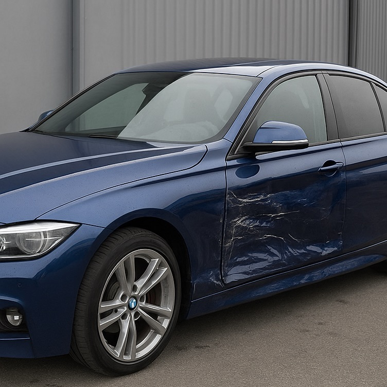
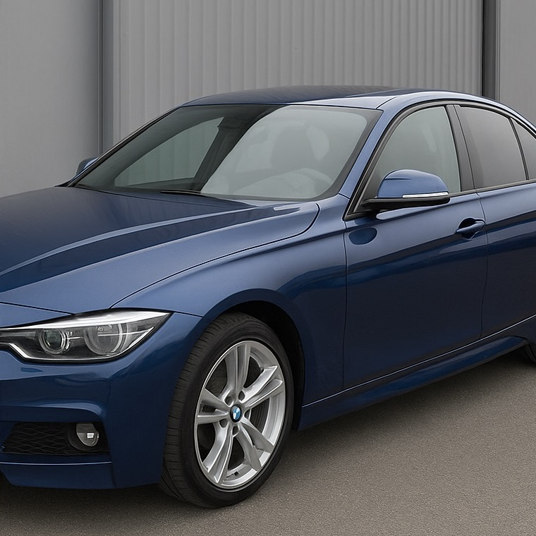
Réparation après choc — Berline sportive
Impact latéral sur portière et aile. Redressage, masquage professionnel et reprise de peinture en cabine pour un résultat invisible.
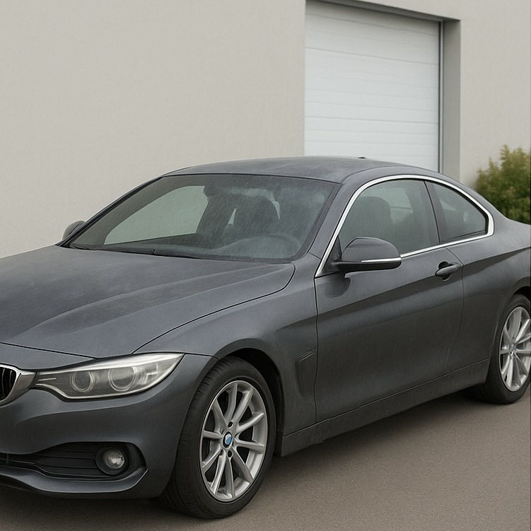
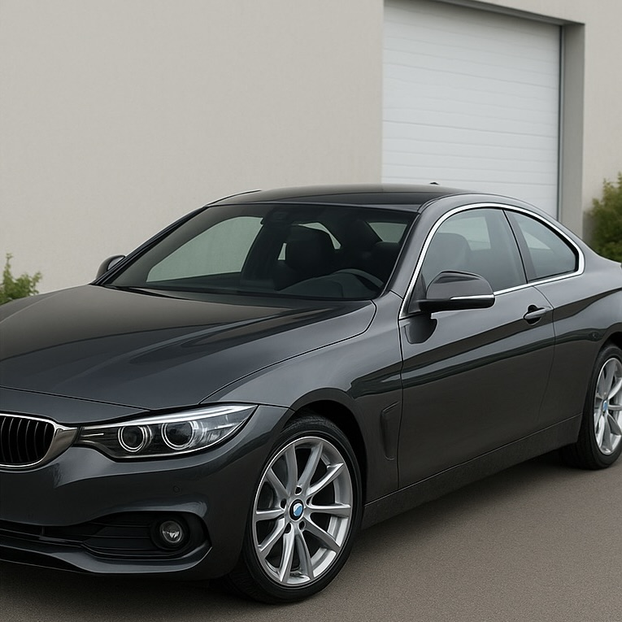
Reprise complète — Coupé haut de gamme
Carrosserie fatiguée, vernis terne. Préparation intégrale, correction des défauts et application d'un système peinture premium pour un rendu showroom.
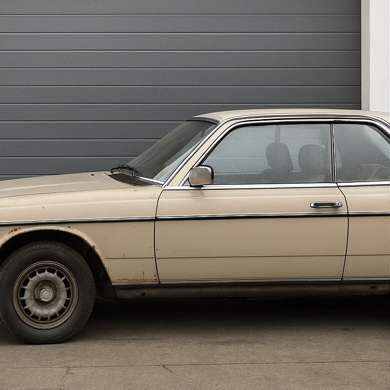
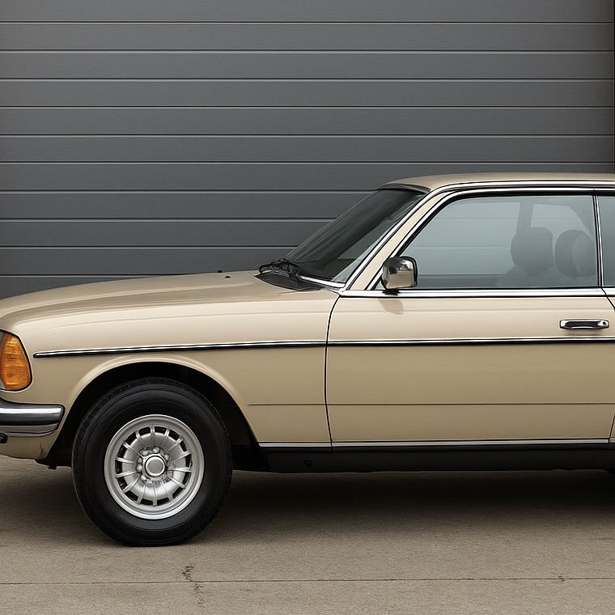
Restauration de collection — Youngtimer
Restauration esthétique respectueuse de l'époque. Recherche de teinte originale, nettoyage en profondeur et application soigneuse pour préserver le caractère.
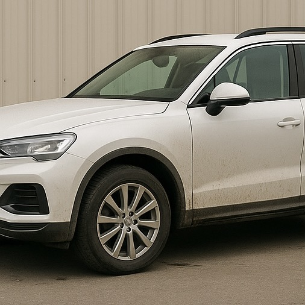
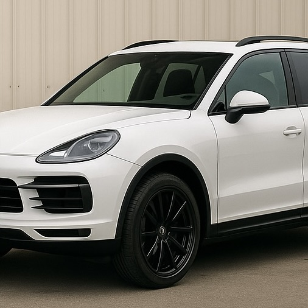
Détailing & jantes — SUV de prestige
Peinture de jantes en noir contrastant, détailing des éléments carrosserie et correction vernis pour un look agressif et harmonieux.
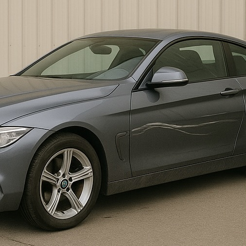
Retouche profonde & vernis — Coupé sportif
Rayures profondes et vernis endommagé. Préparation précise, application base/vernis et polymérisation soignée pour un fini miroir durable.
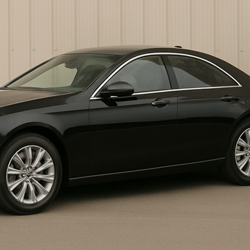
Changement de couleur — Berline de luxe
Transformation complète : passage du noir au gris métallisé. Décapage, préparation minutieuse et système peinture multicouche pour un résultat professionnel.
Études de cas détaillées
Plongée approfondie dans nos projets les plus complexes.
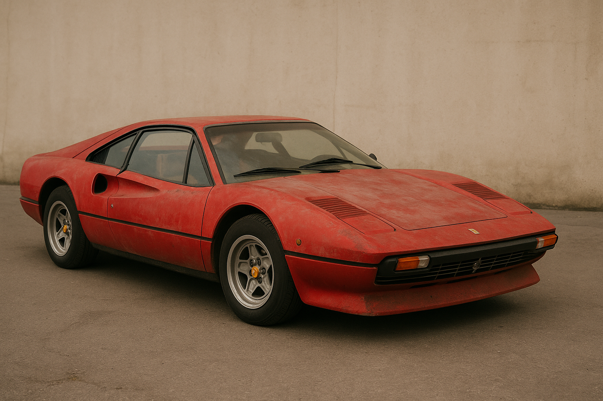
Restauration Ferrari 308 — Esthétique & authenticité
Une Ferrari 308 classique avec une carrosserie vieillie. Notre approche a combiné restauration esthétique et respect de l'authenticité historique. Découvrez le processus complet, de l'analyse de la teinte d'époque à l'application minutieuse.
Lire le détail du projet →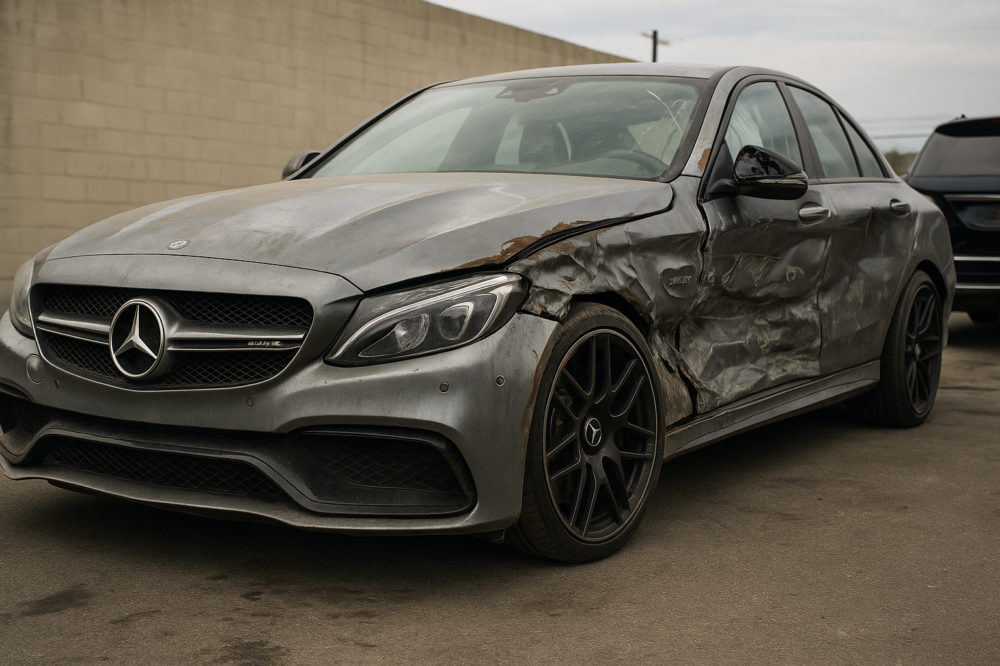
Réparation suite sinistre — Mercedes AMG
Un accident majeur ayant endommagé plusieurs panneaux d'une Mercedes-AMG. Coordination avec l'assurance, redressage structurel et reprise complète en peinture avec respect des normes constructeur.
Lire le détail du projet →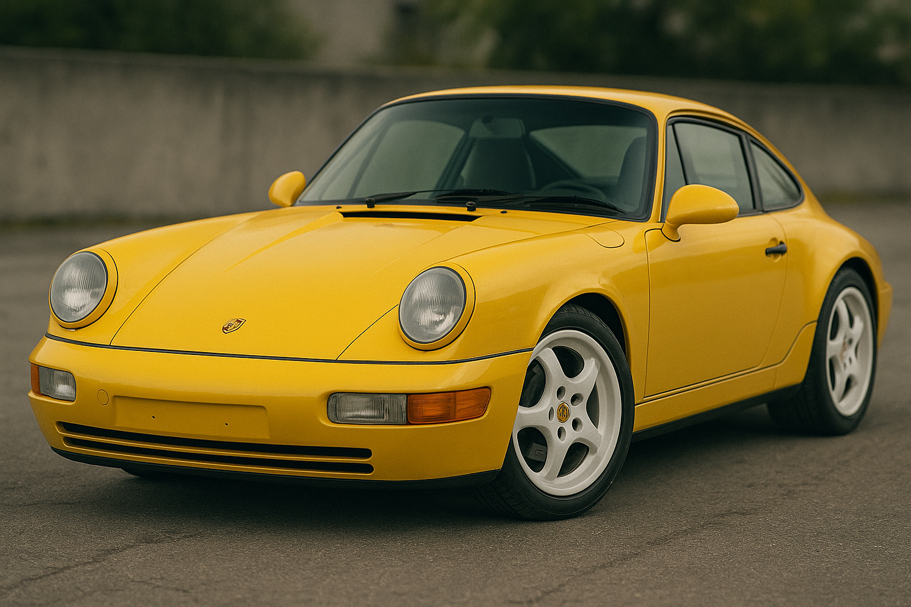
Transformation personnalisée — Porsche 911
Un client souhaitait modifier l'apparence de sa 911. Nous avons réalisé une customisation subtile : jantes en noir contrastant, accents détails et vernis renforcé. Le tout réalisé sans compromettre la valeur du véhicule.
Lire le détail du projet →Ce que nos clients disent
Satisfaction et confiance : la meilleure recommandation.
"Excellent travail sur ma Mercedes. Le résultat est irréprochable, c'est comme si la carrosserie sortait de l'usine. Équipe professionnelle et attentive aux détails."
— Jacques D., Lorient"J'ai confié la restauration de ma collection à Atelier Renaissance. Le respect de l'authenticité et la qualité de finition ont dépassé mes attentes. Je recommande vivement."
— Marie L., Vannes"Suite à un sinistre, l'équipe a très bien géré la coordination avec mon assureur. Transparence totale et résultat impeccable. Merci !"
— Philippe R., LorientPrêt à confier votre véhicule ?
Discutez de votre projet avec notre équipe expert.
Nous contacter